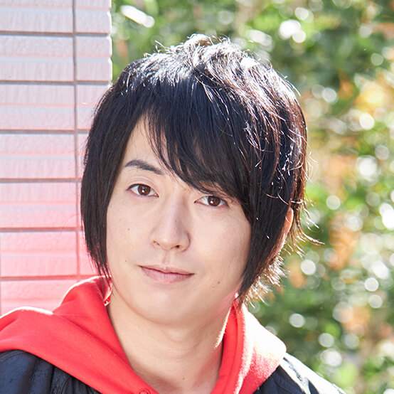

【声マガ・インタビュー】野上 翔
TOPICS
PROFILE
ヴィムスに所属する野上翔さんは、大分県出身の9月4日生まれ。『TSUKIPRO THE ANIMATION』（久我壱流役）、『アイドルマスター SideM』（伊瀬谷四季役）、『覇穹 封神演義』(慈航道人役)、『やがて君になる』(堂島卓役)等に出演。
かつてクリーニング店でアルバイトをしながら、多くのお客さんからの様々な要望に応じてきた野上さん。時には驚くような予想外のお願いもあったとか。しかし、その度に機転を利かせて解決してきたという。そんな野上翔さんに、声優をめざしたきっかけと日本ナレーション演技研究所（以下、日ナレ）で学んだことや、今後の目標についてお話していただきました。
迷いはなかった声優への道
声優という仕事を意識したのはいつ頃ですか？
中学2年生、14歳の時です。当時、僕は陸上部に所属していたのですが、夏休み前にケガをしてしまい、退部したんです。それまでは朝から晩までひたすら部活動に没頭する日々でしたが、急に時間ができてしまいました。夏休みに入っても暇だったので家でテレビゲームをやっていたのですが、一通りゲームを終えて、エンディングロールを眺めていたら、キャラクターの横に別の人の名前が書いてあるのを見つけました。分かっていたことではあるのですが、「そうか、絵が話しているわけじゃないんだよなあ」と改めてこの時に思ったんです。それがこの仕事を初めて意識した瞬間だと思います。
では野上さんが声優をめざしたのはいつからですか？
それもこの時です。役者や芝居といった具体的な表現形態にまで、意識はいってなかったですし、この時点では、自分がめざしている職業の名前が「声優」だということすら知りませんでした。ですが「もし誰にでも挑戦することが可能なら、仕事にできたら面白そうだなあ」と思いました。
中学生の頃からすでに、ご自身の将来を決めていらしたのですね。
僕の通っていた中学校は自営業の家の子どもが多かったのもあってか、クラスメイトのほとんどが中学2年生の時点で将来の進路やそれに向かう目標を少しずつでも定めていた記憶があります。そのなかで僕だけが進路未定で、内心焦りを感じていました。
そんな時にテレビゲームを通して、声優という仕事に興味を抱いたのですね？
はい。陸上部を退部してからは、将来なにをめざすべきか考えざるを得なくなりました。なので、この時点での決断を自分では、ことさら早いとは思っていなかったんです。
野上さんは一度決めたらその道を迷わず進むタイプですか？
比較的、そちらのタイプだと思います。少なくとも「あれもやってみたい、これもやってみたい」という方ではなくて、一つのことに興味を持ったらとことん追求したいタイプだと思います。その分、視野が狭くなりがちなのですが（笑）。そんな性格ですから、高校に入ってからも、ぶれることなく声優をめざしていました。
日ナレを選んだ理由について教えてください。
高校卒業後、声優になるため福岡の声優スクールに通っていたのですが、その時の講師の方と進路について面談をした際、日ナレの存在を教えていただきました。
それまで日ナレの存在は知らなかったということでしょうか？
はい。これはあくまで僕の知る限りですが、当時、声優をめざす人が情報を得る機会・媒体は現在と比べて少なかったように思います。アニメ・情報誌も現在ほど多くなかったですし、各種メディアでも今ほど声優という職業が話題に取り上げられることは無かったと記憶しています。
最終的に日ナレを選択したのはなぜですか？
日ナレ関連の事務所さんに、僕の知っている声優の先輩方が多くいらっしゃったからです。それはとても魅力的でした。
入所されたのはいつですか？
20歳の春です。上京と同時に入所しました。東京に来てひとりぼっちだったのでホームシックにもなりました。当時の僕は、期待と不安がゴチャゴチャに混ざったような感情を抱えていて、とにかく必死でした。
苦悩から解き放たれ臨んだ所内オーディション
実際に入所した日ナレの印象はどのようなものでしたか？
同じクラスにすでに声優としてデビューしている方がいらっしゃったんです。その方と一緒にレッスンを受けることができたのは、大きな刺激になりました。「少なくともこの人と同じくらいできるようになって、初めて事務所に入れるんだ」という具体的な目標ができました。福岡の声優スクールに通っている頃ももちろん「声優になりたい」とは思っていましたが、まだまだ漠然としたものでした。でも日ナレに入ってからは、その気持ちがより明確なものに変わっていきましたね。今の自分には何が足りないのか、何をしなくてはいけないのか、それまで曖昧だった、自分の抱えている課題の輪郭が鮮明になってきたんです。そのことで声優になりたいという気持ちが改めて強くなりました。
クラスメイトから、良い刺激を与えてもらったということですね？
はい。皆さん、親切な方ばかりでした。上京して間もない自分は、周囲の方に助けていただいて最初の1年を過ごすことができたと思っています。また、大学生や社会人の受講生の方たちと話すことができたのも、自分の知らない世界に触れることができて新鮮でした。
講師の方から教わったことで印象に残っていることがあったら教えてください。
感情の解放です。例えば台本上では「怒り」という感情を表現するように書かれていても、その一方で、収録現場では冷静にボールド※や尺を考慮しながら進めなくてはいけません。その際に重要になってくるものの一つが、感情の瞬発力だと思っています。瞬時に感情を解放して適切に表現できるか、その大切さを教えていただきました。また、日ナレには様々なキャリアと考えをお持ちになった講師の方々がいらっしゃいます。なので、毎年クラスが替わる度に、多種多様な角度からお芝居という表現の魅力を教えていただけたと思っています。
指導が厳しいと思ったことはありませんでしたか？
それはありませんでした。皆さん、僕の演技の間違いを指摘するにしても、頭ごなしに否定するようなことはなく、丁寧に理由を説明しながら指導してくださいました。僕はレッスンを、お芝居という形のない表現を生業にしたいと思っている人たちに対して、今現在そのお芝居を生業にしている講師の方々が伝えられるものを還元してくださっている場だと捉えていたので、講師の方を厳しいと感じることはありませんでした。
研修科ではマイク前でのレッスンも経験されたと思うのですが。
マイクワークや尺等の制限が加わる中で演技をするのが、どれだけ難しいことなのか痛感しました。同時に今までレッスンで学んできたことが、いかに必要なものだったのかも理解することができました。それでも僕はまだまだ、だと思いましたが。
では、成長を実感できた出来事はありますか？
最初のレッスンで取り組んだ課題と、全く同じ課題を半年後に再びやることがあったのですが、その時に講師の方から褒めていただけたんですよね。この時は、ほんの少しですが成長を実感することができたように思います。
事務所に所属したのはいつですか？
2014年の春にヴィムスに所属しました。率直に言いますが、この時、所内オーディションを受けたのは完全に想い出作りのような気持ちでした。とにかく悔いを残さないでやりきろうと。なので、緊張も全くしませんでしたね（笑）。事務所の社長やマネージャーさんに、「野上というヤツがいたなぁ」そう覚えてもらえたらラッキーくらいの気持ちでしたから、伸び伸びと臨むことができました。それが良かったのでしょうか（笑）。
そのような心境に至るには、何か理由があったと思うのですが？
はい。その当時の僕は良く言えば一生懸命、悪く言えば周りが全く見えていませんでした。生きていくのに必死で、アルバイトに忙殺される毎日でした。何をするために上京したのか見失いそうなほど、ギリギリの精神状態の日々が続いていたのですが、それでも週1回のレッスンと深夜のアニメを見ることによって、辛うじて自分の気持ちを保っていました。
そんな中、前向きな心境になれたのはいつですか？
研修科の最後の1年です。いよいよ後がないと思い、「これでダメなら演技に関わるのは一切やめて、田舎に帰って就職する」と覚悟を決めたんです。それからは驚くほど気持ちが楽になりました。所内オーディションの最終審査の際も、「これだけ多くの人が声優をめざしていて、自分よりも演技の上手な人がいくらでもいるのだから、むしろ自分がなれるなんて思わない方がいい」、そのくらいの気構えで臨みました。
期限を決めたことで、かえって心が軽くなったということでしょうか？
そういうことだと思います。もちろんガツガツ行った方が良い時もあると思います。ですが、僕はあの時に開き直れたからこそ、お芝居の楽しさや表現することの喜びを再び取り戻すことができたんじゃないかと思っています。
作品に深みと輪郭を与える「歯車」になりたい
デビュー作を教えてください。
アニメなら『一週間フレンズ。』という作品です。この時は主人公・長谷祐樹の同級生の役でした。主人公にバレーボールをぶつけて「長谷、ゴメン」と謝るだけなのですが、とにかく緊張しました。マイク前では台本を持ちながら、尋常ではない手汗をかいていたのをよく覚えています。あまりの緊張で、自分のセリフの10カット近く前から立ち上がっていましたね。周囲にいらした先輩方も、僕が立ち上がるのが早すぎて、「あれ、この人どこかのマイクに入るのかな？」と不思議そうな顔をしていました（笑）。
では、役名のあるキャラクターで印象に残っているものはありますか？
僕を色んな方に知っていただくきっかけになった最初のキャラクターでもある『アイドルマスター SideM』の伊瀬谷四季というキャラクターです。それまで役名のないキャラクターを担当させていただいた現場では、30分の作品の中で、前半と後半で異なるキャラクターに声をあてることも少なくなかったんですが、この作品はスタートはアプリですが、シリーズを通して同じキャラクターを演じさせていただいた初めての現場だったので、とても嬉しかったのを覚えています。この年はこの作品に関連したCDのレコーディングや取材、生放送等もあり、とにかくガムシャラで濃密な1年でした。
キャラクターを演じるにあたって、心がけていることはありますか？
いただいた資料を確認しながら自分の中で試行錯誤を続け、現場でディレクターさんやスタッフさんとも話し合いながら、そのキャラクターを形作っていきます。伊瀬谷というキャラクターも3年以上演じさせていただいているのですが、まだまだ新しい発見があります。「つかめた」と思うこともあるのですが、それも束の間、次の瞬間には自分の知らない違う側面が現れてくる。そんなことの繰り返しです。作品が続く限りキャラクターも色々な角度で成長し、様々な面を見せてくれます。ですから演じる僕たち役者の側も、同じように成長していかなきゃいけないんだと思っています。
文字通り終わりのない関係ですね。
そうですね。ですからオンエアを見たり、ゲームをプレイしながら「（収録の際）もっとこうするべきだったんじゃないか」と、反省することも多々あります。キャラクターと役者って、お互いが一生追いかけっこを続けていく、そんな関係なんじゃないかと思っています。
野上さんの考える声優という仕事の魅力を教えてください。
自分という人間の枠を飛び出していくことができるお仕事だと思います。現在の声優という職業は歌や取材や動画への出演等、多岐にわたります。また声優と俳優という職業の垣根もなくなりつつあるように思います。それでも僕は、声優の仕事は二次元の絵に魂を吹き込むことが一番の魅力だと思っています。海外の俳優の方の吹き替えもできれば、それこそ人間じゃないものにだってなることができるんです。これも大きな魅力だと思います。
今後、どのような声優になりたいか教えてください。
作品を構成する歯車として、しっかり稼働できる声優をめざしたいです。どんな作品もいろいろな歯車がかみ合うことで成立しています。僕は中心に近い役を演じる際、モブで出演してくださる方々に対して、とてもありがたいと感じています。作品は主役だけでも、モブだけでも成り立たない。スタッフの方々も含めて、誰が抜けても成立しません。そんな多くの方が携わる中で、僕はどんな役でも、作品にもっと深みや明確な輪郭を与えることができる、そんな声優になりたいですね。
最後に声優をめざしている方へのメッセージをお願いします。
なれると思ったらなれる、とは僕の経験上、正直言えません。僕自身上京してから今日までにたくさんの人達、キャラクター達との出会いがあって、そのありがたい偶然の積み重ねの上に今立たせていただいています。ここまで読んでくださったあなたが、本当に本気でめざしているのなら、夢や目標に対して、とことん自分を追い込んで欲しい。なぜなら、あらゆることには終わりが必ずくるからです。だからこそ、その時がくるまでは、最後まであがいてください。また、いろいろなことにアンテナを張っておいて欲しいですね。声優というお仕事は、どんな経験も無駄にはなりません。演じるアニメのキャラクターが自分の境遇と似ていたり、トークイベントやラジオなどでエピソードを披露したり等、どんなシチュエーションでどんな経験が活かされるか本当にわかりません。僕も過去を振り返って「あの時もっとこうしておけば良かった！」なんて思うことも多々あります。なので、一日一日を大切に過ごしてくださいね！ 僕も頑張ります！
※ボールド：自分がセリフを言うタイミングになると画面上に出てくる役名が書かれたマークのこと
プロフィール
野上 翔
- 所属事務所
- ヴィムス
主な出演歴
- アイドルマスター SideM（伊瀬谷四季）
- TSUKIPRO THE ANIMATION（久我壱流）
- やがて君になる（堂島卓）



{kind=link}
{kind=link}
{kind=link}
{kind=link}
{kind=link}
{kind=link}